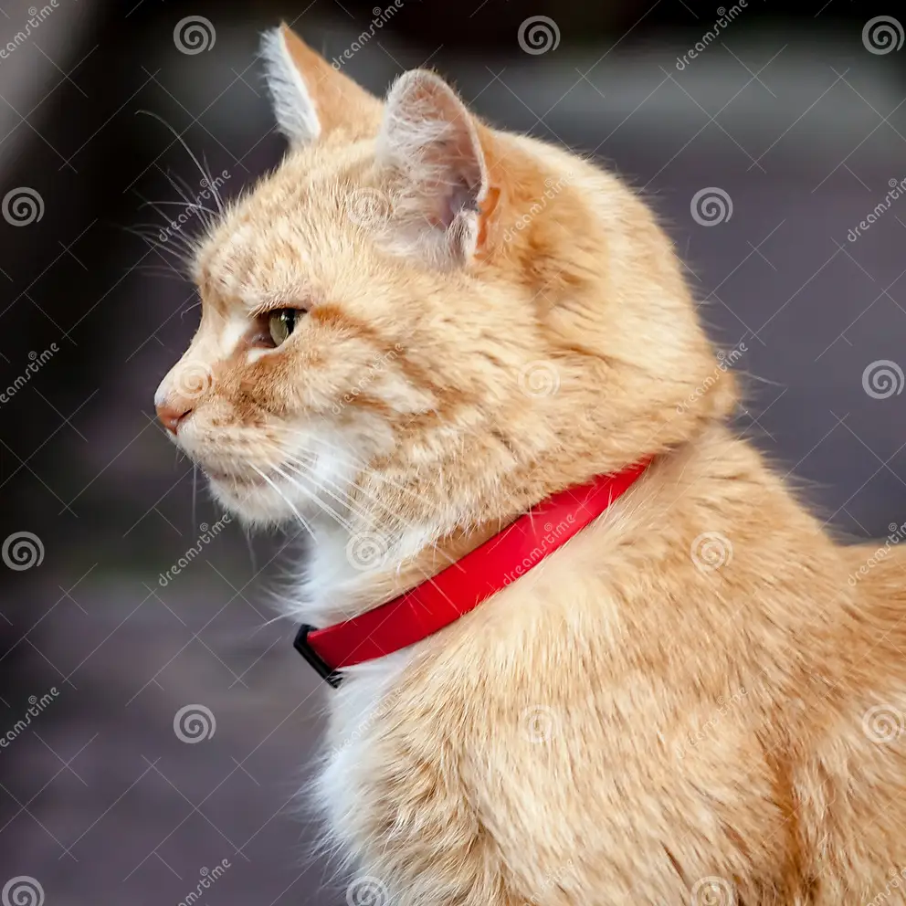

Shubhamkar B. Ayare
"Who am I?"
For most readers, I will be a graduate student under the Cognitive Science department at IIT Kanpur, India. As part of my master's thesis, I have been investigating the Visual Indexing Theory of the late Dr. Zenon Pylyshyn, and working an index-less model of human multiple object tracking of visually identical objects under the guidance of Prof. Nisheeth Srivastava.

I also have a background in computer science through an undergraduate degree at IIT Bombay, and spend my free time developing and maintaining Common Lisp libraries.
That said, this is a question that has plagued me for a while. Perhaps the reason it is tough to answer is because there is no unique objective answer to such a question. For example, consider this image. What is it an image of?

A cat? Yes, but it's also an image of a collar that has a paint the molecules of which illuminated using white light reflect red light. And even that would be an insufficient description!
I think the answers to questions such as "Who is this person?", "What is this an image of?", "What does this text mean?" depend on not only the thing under consideration, but also on who asks the questions, what categories the asker has in their mind, and perhaps what implicit or explicit goals or intentions the asker has. Some day, I wish to incorporate the asker-dependency of these questions into the development of machines with human-like learning abilities.
In the longer run, I wish to build machines with human-like general learning abilities. Besides academics,
- For the past few years, I have been consistently coding Common Lisp in Emacs.
- I have been on Quora since at least 2014. Some of my answers that I felt were interesting have been collected here.
- Some interesting books I've come across include
- Sapiens: A brief History of Humankind
- Ender’s Game and its sequel Speaker for the Dead
- Godel, Escher and Bach: An eternal golden braid
- Linear Algebra Done Right
- The Language Instinct: How the Mind creates language
- The Evolution of Agency: Behavioral Organization from Lizards to Humans
- The Evolution of the Sensitive Soul: Learning and the Origins of Consciousness
- I also sometimes write on wordpress. Some articles of general interest include:
- alterschoolindia: Supplementary resources for middle school education.
- alterschoolindia/intermediate: Some resources on Career Tasting (yes, that's T-A-S-T)